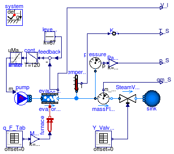
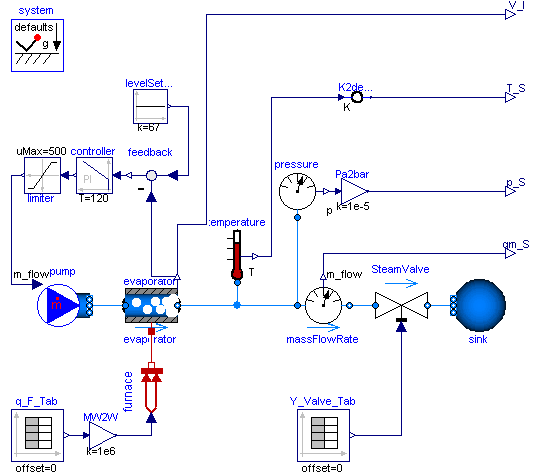

| Name | Description |
|---|---|
| Complete drum boiler model, including evaporator and supplementary components | |
| Additional components for drum boiler example |


Extends from Modelica.Icons.Example (Icon for an example model).
| Type | Name | Description |
|---|---|---|
| output RealOutput | T_S | |
| output RealOutput | p_S | |
| output RealOutput | qm_S | |
| output RealOutput | V_l |
model DrumBoiler
"Complete drum boiler model, including evaporator and supplementary components"
extends Modelica.Icons.Example;
import Modelica.SIunits.Conversions.*;
Modelica.Fluid.Examples.DrumBoiler.BaseClasses.EquilibriumDrumBoiler
evaporator(
m_D=300e3,
cp_D=500,
V_t=100,
V_l_start=67,
redeclare package Medium = Modelica.Media.Water.StandardWater,
energyDynamics=Modelica.Fluid.Types.Dynamics.FixedInitial,
massDynamics=Modelica.Fluid.Types.Dynamics.FixedInitial,
p_start=100000);
Modelica.Thermal.HeatTransfer.Sources.PrescribedHeatFlow furnace;
Modelica.Fluid.Sources.FixedBoundary sink(nPorts=1, p=from_bar(0.5),
redeclare package Medium = Modelica.Media.Water.StandardWaterOnePhase,
T=500);
Modelica.Fluid.Sensors.MassFlowRate massFlowRate( redeclare package
Medium =
Modelica.Media.Water.StandardWater);
Modelica.Fluid.Sensors.Temperature temperature( redeclare package Medium
= Modelica.Media.Water.StandardWater);
Modelica.Fluid.Sensors.Pressure pressure( redeclare package Medium
= Modelica.Media.Water.StandardWater);
Modelica.Blocks.Continuous.PI controller(T=120, k=10);
Modelica.Fluid.Sources.MassFlowSource_h pump(nPorts=1,
h=5e5, redeclare package Medium =
Modelica.Media.Water.StandardWater,
use_m_flow_in=true);
Modelica.Blocks.Math.Feedback feedback;
Modelica.Blocks.Sources.Constant levelSetPoint(k=67);
Modelica.Blocks.Interfaces.RealOutput T_S;
Modelica.Blocks.Interfaces.RealOutput p_S;
Modelica.Blocks.Interfaces.RealOutput qm_S;
Modelica.Blocks.Interfaces.RealOutput V_l;
public
Modelica.Blocks.Math.Gain MW2W(k=1e6);
Modelica.Blocks.Math.Gain Pa2bar(k=1e-5);
Modelica.Thermal.HeatTransfer.Celsius.FromKelvin K2degC;
Modelica.Blocks.Nonlinear.Limiter limiter(uMin=0, uMax=500);
Modelica.Fluid.Valves.ValveLinear SteamValve( redeclare
package Medium =
Modelica.Media.Water.StandardWater,
dp_nominal=9000000,
m_flow_nominal=180);
inner Modelica.Fluid.System system;
Modelica.Blocks.Sources.TimeTable q_F_Tab(table=[0, 0; 3600, 400; 7210,
400]);
Modelica.Blocks.Sources.TimeTable Y_Valve_Tab(table=[0,0; 900,1; 7210,1]);
equation
connect(furnace.port, evaporator.heatPort);
connect(controller.u,feedback.y);
connect(feedback.u2, evaporator.V);
connect(levelSetPoint.y,feedback.u1);
connect(massFlowRate.m_flow, qm_S);
connect(evaporator.V, V_l);
connect(MW2W.y,furnace.Q_flow);
connect(pressure.p, Pa2bar.u);
connect(Pa2bar.y, p_S);
connect(K2degC.Celsius, T_S);
connect(controller.y, limiter.u);
connect(limiter.y, pump.m_flow_in);
connect(temperature.T, K2degC.Kelvin);
connect(pressure.port, massFlowRate.port_a);
connect(pump.ports[1], evaporator.port_a);
connect(massFlowRate.port_b, SteamValve.port_a);
connect(SteamValve.port_b, sink.ports[1]);
connect(evaporator.port_b, massFlowRate.port_a);
connect(temperature.port, massFlowRate.port_a);
connect(q_F_Tab.y, MW2W.u);
connect(Y_Valve_Tab.y, SteamValve.opening);
end DrumBoiler;